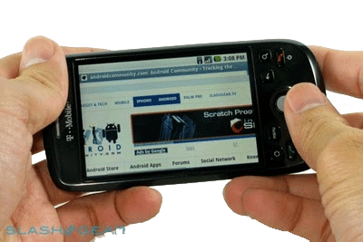

I’m not going to speculate on if Google are going to buy t-mobile. I’ve been asked about it a lot today and here are some things that could be of interest to schools.
Q) Will google provide completely free handsets and phone contracts, funded by Ads + % revenue from Google Market (Androids App store)?
A) Android is open source, even if an Ad is required the openness of the operating system makes it very easy to work around any Ad delivery so it’s a BIG risk for Google.
Q) Would a Google purchase of T-Mobile mean my kids would get free handsets and phone contracts?
A) Probably not. Google know they can’t advertise to kids and the cost of the handset is too high to give it away without any ads.
Q) Would a Google purchase of T-Mobile or another phone carrier make perfect sense?
A) Due to all the augmented reality computing being pushed out of both Microsoft and Google then yep.

Q) What do I want a Google/T-Mobile purchase for my school?
A) I’d love free handsets and contracts for all staff. Do I expect this? No.
Q) Do I want my phone provider to change from T-Mobile to Google?
A) Only if Internet connectivity (as in 3/4G/HSDPA coverage) improves dramatically because of it. Google has an incentive to get you online, especially onto their search pages so it is in their best interest to make the web aspects of the device as accessible as possible.
I kinda get the feeling Google is going to be the provider of the famous star trek communicator..